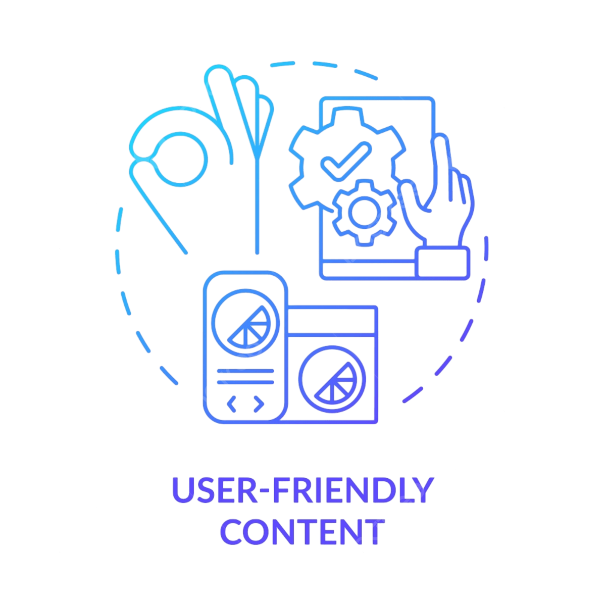

Where Calm Meets Clarity
Community Engagement
Our anonymous chat feature fosters a supportive community where users can connect, share experiences, and seek advice in a safe environment. This sense of belonging encourages open discussions about mental health, reducing isolation and promoting well-being.
Confidentiality Assurance
Strong privacy measures guarantee user anonymity and data security.

User Friendly Design
An intuitive layout ensures easy navigation, making it simple for users to find the support they need.